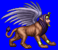
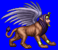
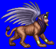
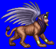

Height: 3-4 meters Weight: ???
Habitat: Desert Origin: Egypt, Greece
Meaning: Greek "sphink" or tough bonds
The Egyptian sphinx is a beast that has the head of a human and the body of a lion. Often, Egyptian kings would be portrayed in this way as an homage to the sun god. The Greeks who visited Egypt called portraits of such kings "sphinxes", as they were very similar to the statues of sphinxes seen in ancient Egypt. In Greece, the sphinx was considered a bringer of chaos and sorrow. It would sit on a high rock near Thebes and pose a riddle to all who passed. Those who could not answer the riddle were strangled. Oedipus eventually answered the riddle correctly, causing the sphinx to commit suicide.